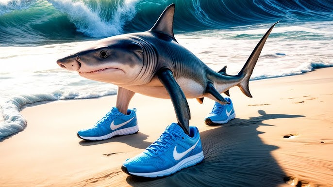
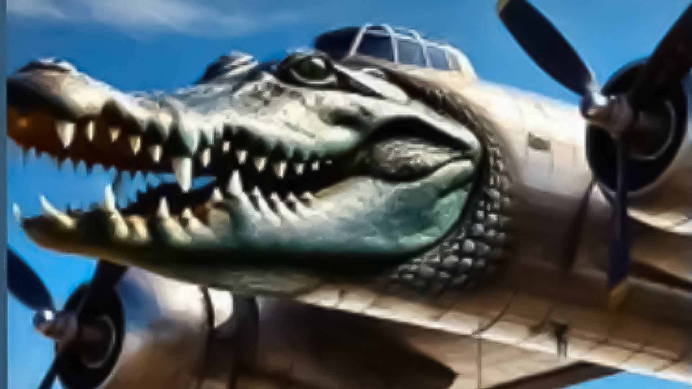
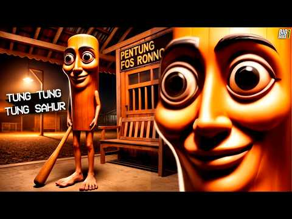
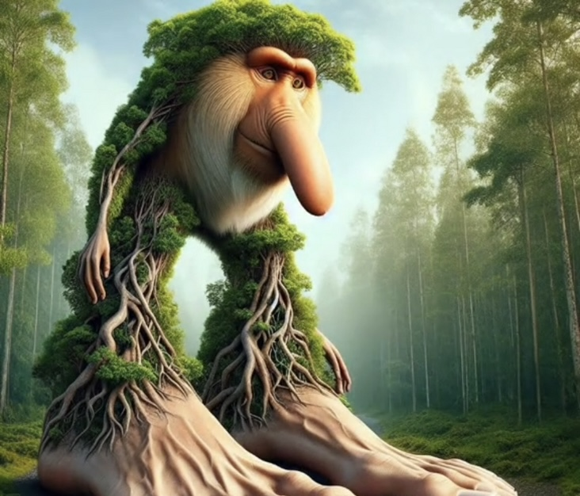

Top 5 maravilhas da sociedade contemporânea
Tralalero Tralala
Tralalero Tralala é um tubarão de três patas que se desloca pelo fundo do mar com surpreendente agilidade, usando duas patas no lugar das nadadeiras laterais e uma terceira ao final da cauda. Ele ostenta um par de tênis Nike azuis que proporcionam aderência e exibem sua confiança nas profundezas.
Fala original: "Tralalero Tralala, porco Dio e porco Allah."
Desde sua criação em janeiro de 2025, Tralalero se tornou um fenômeno viral, aparecendo em vídeos animados e memes que o colocam em confronto direto com Bombardiro Crocodilo. É o verdadeiro "Ninguém solta a mão de ninguém do fundo do mar".
Bombardiro Crocodilo
Bombardiro Crocodilo é uma criatura híbrida, com o corpo de um avião militar bombardeiro e a cabeça de um crocodilo. Suas asas permitem voar sobre qualquer obstáculo, enquanto as mandíbulas poderosas esmagam tudo em seu caminho.
Fala original: "Bombardiro Crocodilo. Un fottuto alligatore volante che vola e bombarda i bambini a Gaza e in Palestina. Non crede in Dio e ama le bombe, si nutre dello spirito di tua madre."
Retratado em batalhas épicas contra Tralalero, Bombardiro Crocodilo chegou às redes em março de 2025. Seu bordão virou hit no TikTok.
Tung Tung Tung Sahur
Tung Tung Tung Sahur é um boneco de madeira antropomórfico com traços rústicos, carregando um taco de beisebol. Seu nome onomatopeico remete ao toque de tambores que anuncia o início do suhur durante o Ramadã.
Fala original: "Tung tung tung sahur!"
Criado por @noxaasht em fevereiro de 2025, Tung Tung Tung Sahur viralizou com o áudio: "Eu nunca pedi nada pra você" remixado em batida de beisebol.
Ballerina Cappuccina
Ballerina Cappuccina apresenta uma bailarina cujo corpo clássico contrasta com uma xícara de cappuccino no lugar da cabeça. Vestida com tutu e sapatilhas, ela executa piruetas graciosas que desafiam a lógica.
Fala original: "Ballerina Cappuccina, mi mi mi miiii!"
Desde março de 2025, Cappuccina reinou nos Reels com a legenda: "Meu café me disse pra dançar" — e quem somos nós para discordar?
Brr Brr Patapim
Brr Brr Patapim é uma árvore antropomorfizada com pés robustos e um nariz proeminente. Seu tronco texturizado e galhos esparsos conferem-lhe um charme rústico.
Fala original: "Brr brrr patapim, il mio cappello è pieno di Slim!"
Lançado em abril de 2025, Patapim é o rei dos bumps com sua frase "Segura essa árvore que hoje o frio é só vibe".